Laboratorios 1 y 2
Estadística Descriptiva Multivariada
lunes, 2 de diciembre, 2024
Punto 5
Construir una nube de palabras que muestre las primeras 20 universidades según el según el World.Rank, por su número de publicaciones altamente citadas (HiCi).
¿Se puede afirmar que las primeras 10 se distinguen claramente de las otras 10, por su número de publicaciones?
# Asegúrarse de que el campo HiCi esté en formato numérico
ARWU_100_top$HiCi <- as.numeric(gsub(",", ".", ARWU_100_top$HiCi))
# Filtra las primeras 20 universidades segun el World.Rank
top_20 <- ARWU_100_top |>
select(Institution,Region,Country,World.Rank,HiCi) |>
arrange(desc(HiCi)) |>
slice(1:20)
# Prepara los datos para la nube de palabras
# Selecciona la columna de la universidad y el número de publicaciones (HiCi) como el tamaño de cada palabra
wordcloud_data <- top_20 %>%
select(Institution, HiCi) %>%
na.omit() %>%
rename(word = Institution, freq = HiCi)
# Genera la nube de palabras
wordcloud(wordcloud_data$word,wordcloud_data$freq, scale=c(3,1),
max.words=100, random.order=FALSE, rot.per=0.4,
use.r.layout=FALSE, random.color = TRUE, colors = 1:20)
Punto 7
Para las variables que tienen datos atípicos identificadas en el ejercicio 6 buscar una transformación que estabilice la varianza y mostrar graficos comparativos de datos originales y datos transformafos como en el ejemplo 1.9.1.
ciudades <- read_excel("datos/ciudades original-filtrado-con etiquetas.xlsx")
cyt_infra_fin <- ciudades |> dplyr::select(dplyr::starts_with(c("CYT", "INFRA", "FIN")))
cyt_infra_fin2 <- cyt_infra_fin |> tidyr::pivot_longer(everything(), names_to = "Variable", values_to = "Valor") |> arrange(Variable) |>
mutate(
Tipo = case_when(
startsWith(Variable, "CYT") ~ "CYT",
startsWith(Variable, "INFRA") ~ "INFRA",
startsWith(Variable, "FIN") ~ "FIN",
TRUE ~ NA
))
ggplot(cyt_infra_fin2, aes(x=Tipo, y=Valor, fill=Variable)) +
geom_boxplot()
y las del grupo INFRA:
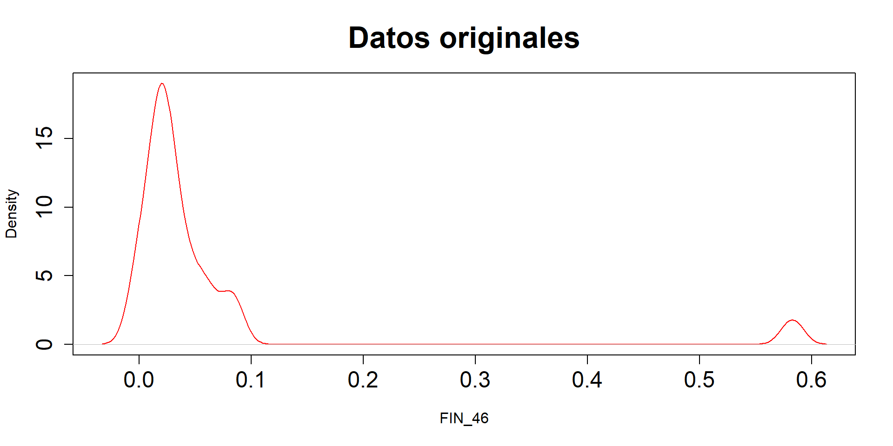

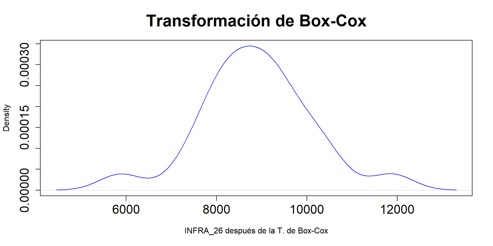
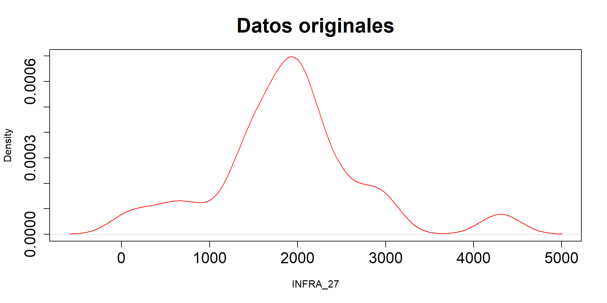
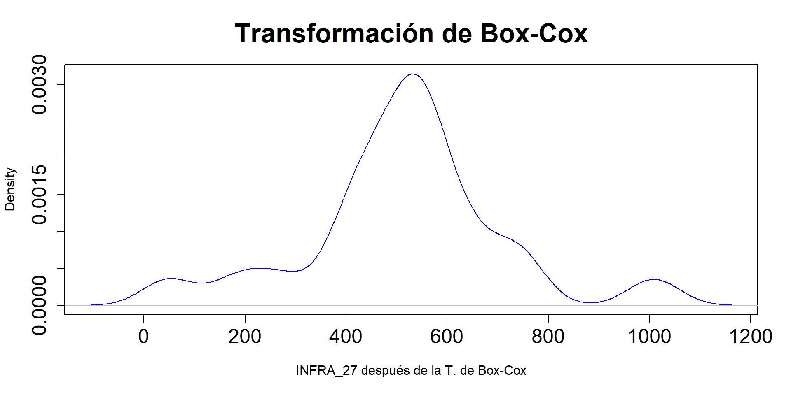
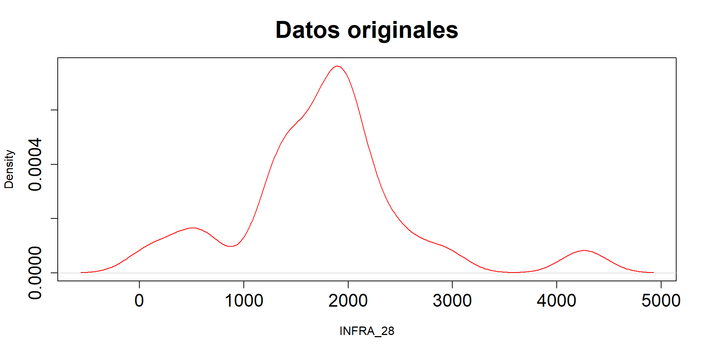
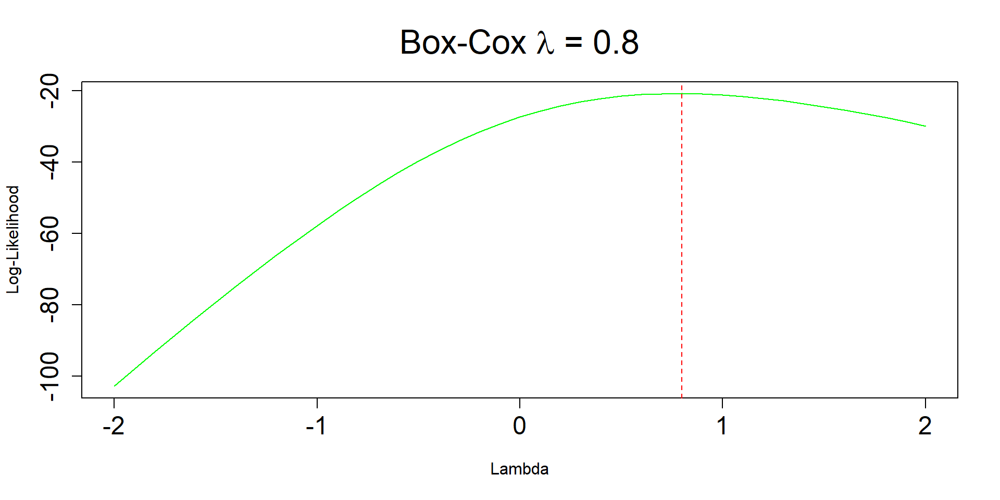
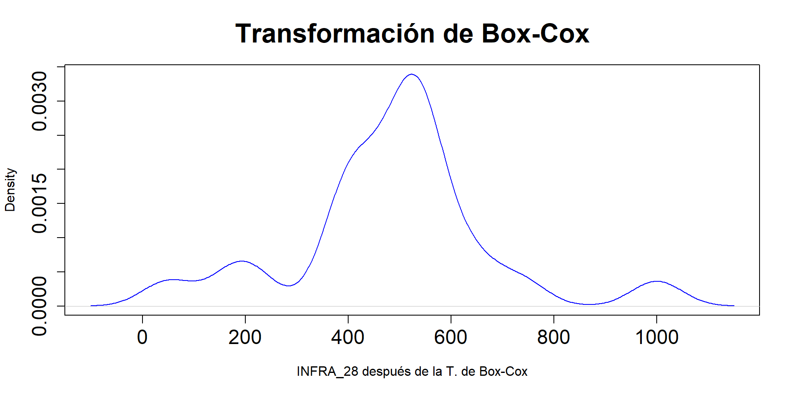
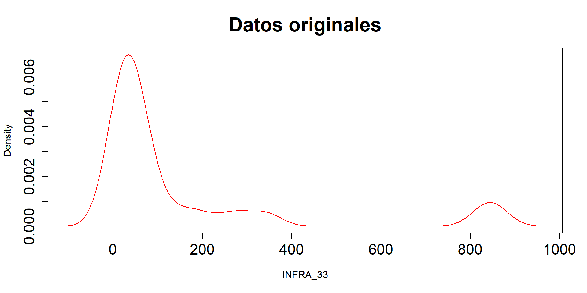
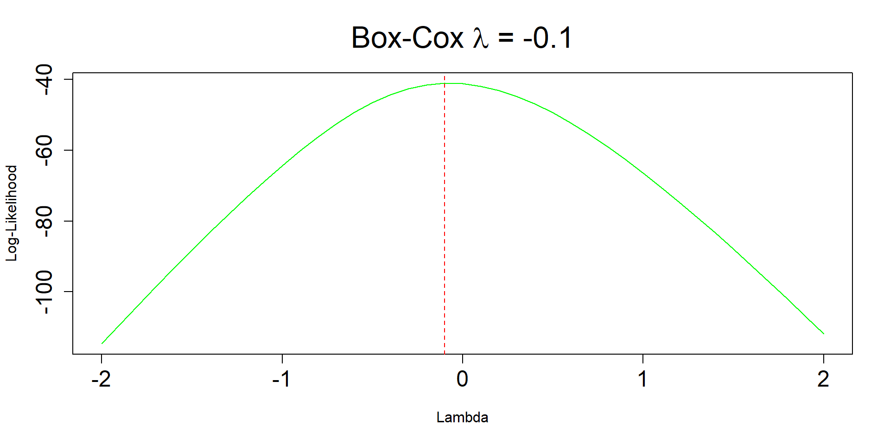
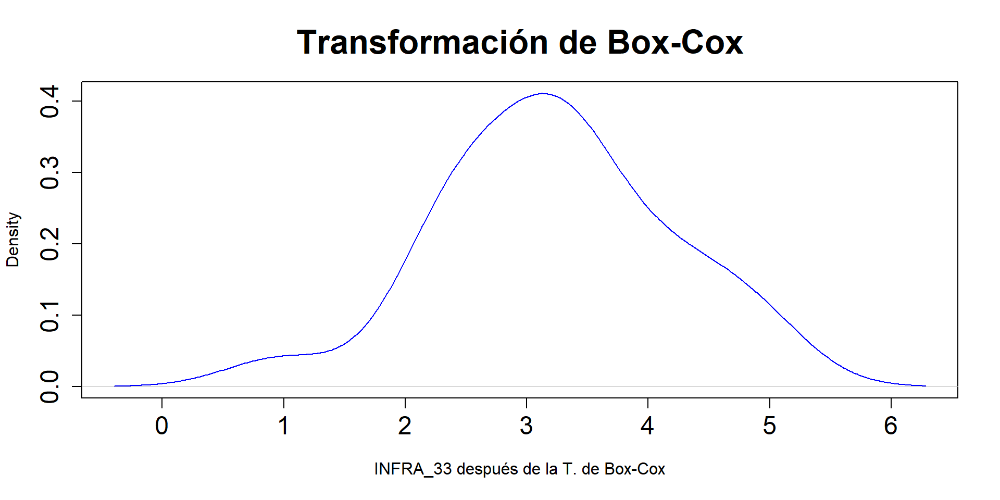
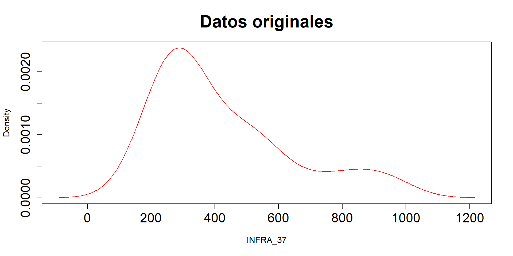
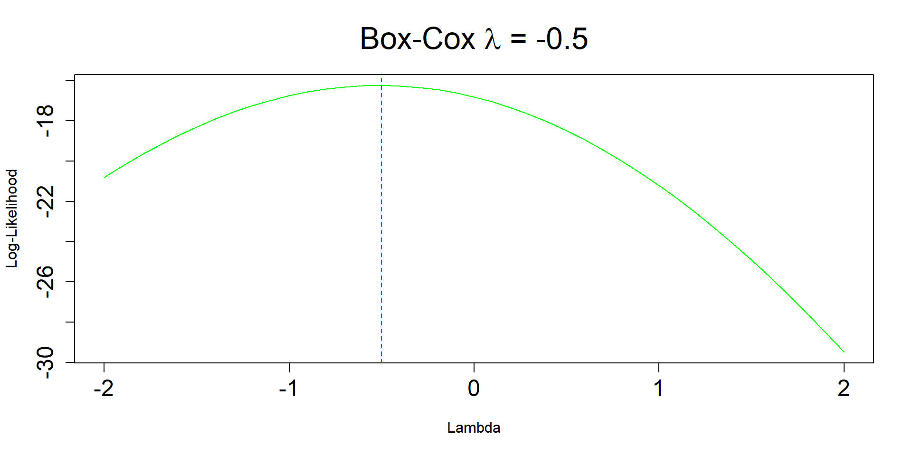
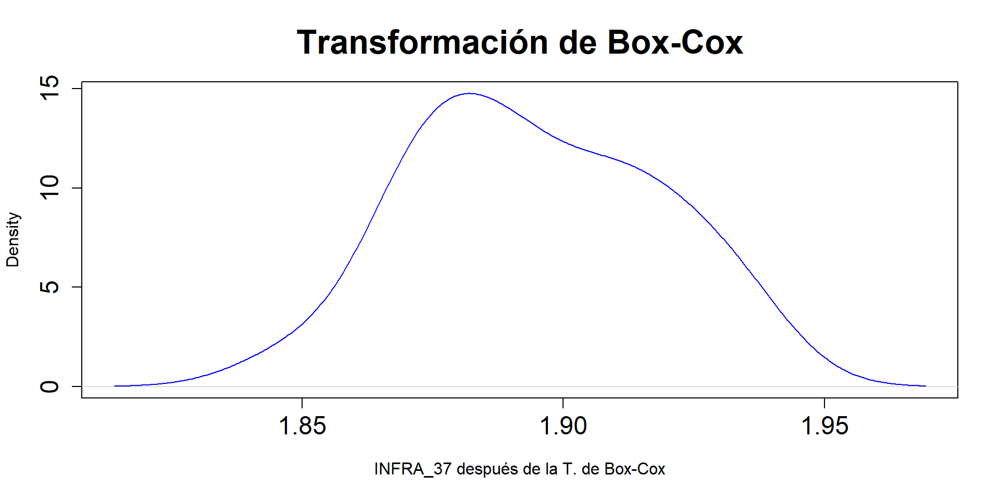
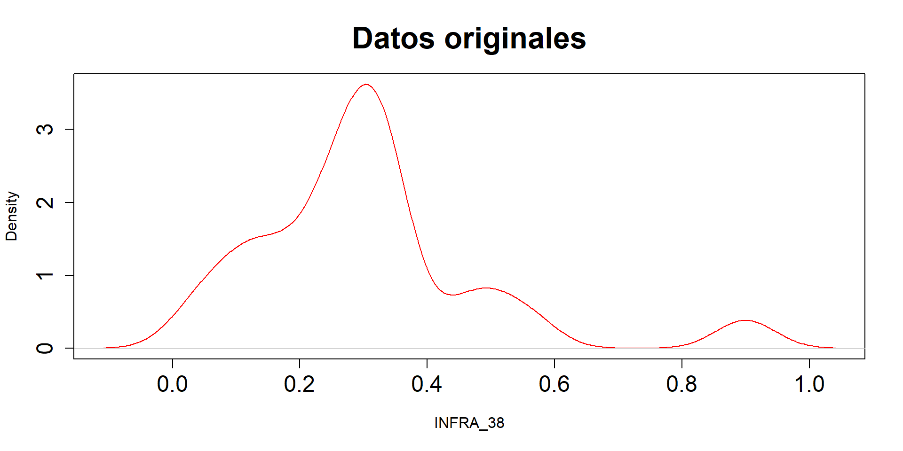
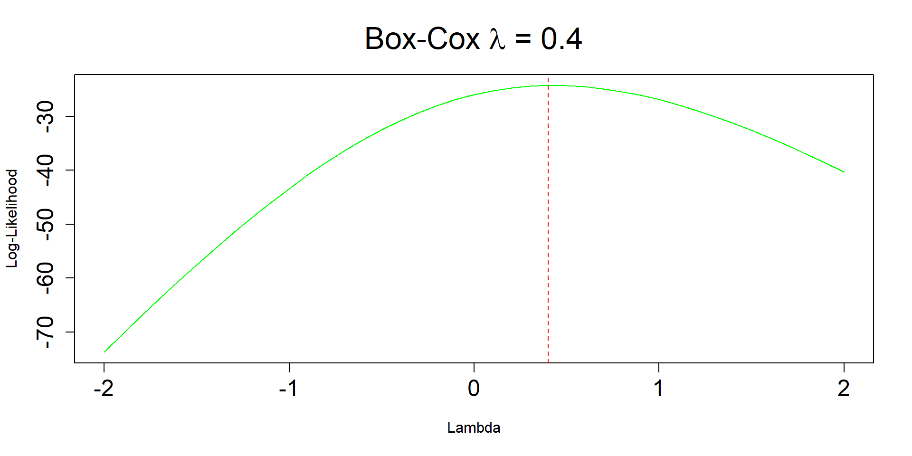
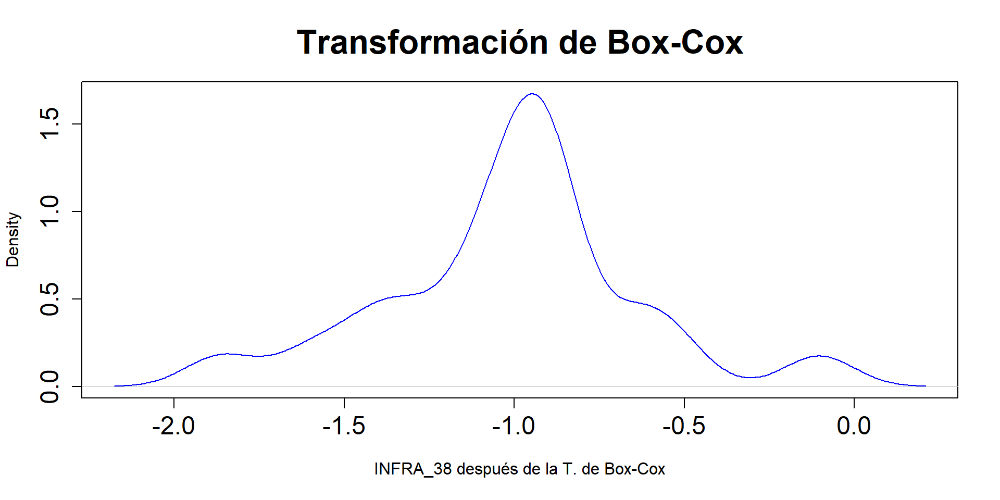
Punto 11
Repetir los ejercicios 9 y 10 con las variables del grupo INFRA
ciudades <- read_excel("datos/ciudades original-filtrado-con etiquetas - copia.xlsx")
# Función para calcular la distancia de Mahalanobis y graficar
calcular_mahalanobis <- function(ciudades, var1, var2, ciudad1, ciudad2, resultados) {
# Selección de las variables y conversión a data frame
data <- as.data.frame(subset(ciudades, select = c(var1, var2)))
rownames(data) <- ciudades$CIUDADES
# Convertir las variables a numéricas
data[, var1] <- as.numeric(data[, var1])
data[, var2] <- as.numeric(data[, var2])
# Cálculo de la distancia de Mahalanobis entre las dos ciudades
dist_mahalanobis <- sqrt(mahalanobis(as.numeric(data[rownames(data) == ciudad1, ]),
colMeans(data),
cov(data)))
# Agregar los resultados a la tabla
resultados <- rbind(resultados, data.frame(
Ciudad1 = ciudad1,
Ciudad2 = ciudad2,
Distancia_Mahal = round(dist_mahalanobis,3),
Variables = paste(var1, var2, sep = " & ")
))
# Mostrar distancias
# print(paste("Distancia Mahalanobis entre", ciudad1, "y", ciudad2, ": ", dist_mahalanobis))
# Graficar
xbar <- colMeans(data)
plot(data[, 1], data[, 2],,
xlab = var1, ylab = var2, main = paste("Gráfico de", var1, "vs", var2),
xlim = c(min(data[, 1], na.rm = TRUE), max(data[, 1], na.rm = TRUE)),
ylim = c(min(data[, 2], na.rm = TRUE), max(data[, 2], na.rm = TRUE)))
# Añadir etiquetas de las ciudades
text(data[, 1], data[, 2], rownames(data), cex = 0.7, pos = 3)
# Dibujar líneas de la media
abline(h = xbar[2], col = "orange", lty = 2)
abline(v = xbar[1], col = "orange", lty = 2)
# Etiqueta para la media
text(xbar[1] - 0.2, xbar[2] - 0.02,
labels = expression(bar(x) ~ "y" ~ bar(y)),
col = "purple", cex = 0.7, font = 1, las = 2)
# Devolver los resultados actualizados
return(resultados)
}
ciudades[ciudades$CIUDADES=="San Arés",1] <- "San Andrés"
# Crear tabla vacía para almacenar resultados
resultados <- data.frame(Ciudad1 = character(0), Ciudad2 = character(0),
Distancia_Mahal = numeric(0),
Variables = character(0))
# Función para calcular la distancia euclidiana entre dos ciudades
calcular_euclidiana <- function(ciudades, var1, var2, ciudad1, ciudad2) {
# Selección de las variables y conversión a data frame
data <- as.data.frame(subset(ciudades, select = c(var1, var2)))
rownames(data) <- ciudades$CIUDADES
# Convertir las variables a numéricas
data[, var1] <- as.numeric(data[, var1])
data[, var2] <- as.numeric(data[, var2])
# Extraer las coordenadas de las dos ciudades
coord_ciudad1 <- as.numeric(data[rownames(data) == ciudad1, ])
coord_ciudad2 <- as.numeric(data[rownames(data) == ciudad2, ])
# Calcular la distancia euclidiana
dist_euclidiana <- round(sqrt(sum((coord_ciudad1 - coord_ciudad2)^2)),3)
# Mostrar el resultado
# print(paste("Distancia Euclidiana entre", ciudad1, "y", ciudad2, ":", dist_euclidiana))
# Devolver la distancia
return(dist_euclidiana)
}Variables con mayor córrelación
infra_vars <- subset(ciudades, select = startsWith(colnames(ciudades), "INFRA"))
# Calcular la matriz de correlación
cor_matrix <- cor(infra_vars)
# Encontrar las variables con mayor correlación
max_corr <- which(cor_matrix == max(cor_matrix[upper.tri(cor_matrix)]), arr.ind = TRUE)
var1 <- colnames(infra_vars)[max_corr[1]]
var2 <- colnames(infra_vars)[max_corr[2]]
# Llamar a la función para las variables con mayor correlación
dist_mahalanobis <- calcular_mahalanobis(ciudades, var1, var2, "San Andrés", "Riohacha", resultados)
| Distancia Euclideana y de Mahalanobis entre Riohacha y San Andrés | ||||
| Ciudad 1 | Ciudad 2 | Variables | Distancia Euclideana | Distancia de Mahalanobis |
|---|---|---|---|---|
| San Andrés | Riohacha | INFRA_28 & INFRA_27 | 811.136 | 2.997 |
Variables con menor córrelación
# Encontrar las variables con menor correlación
min_corr <- which(cor_matrix == min(cor_matrix[upper.tri(cor_matrix)]), arr.ind = TRUE)
var11 <- colnames(infra_vars)[min_corr[1]]
var22 <- colnames(infra_vars)[min_corr[2]]
# Llamar a la función para las variables con menor correlación
dist_mahalanobis <- calcular_mahalanobis(ciudades, var11, var22, "San Andrés", "Riohacha", resultados)
| Distancia Euclideana y de Mahalanobis entre Riohacha y San Andrés | ||||
| Ciudad 1 | Ciudad 2 | Variables | Distancia Euclideana | Distancia de Mahalanobis |
|---|---|---|---|---|
| San Andrés | Riohacha | INFRA_38 & INFRA_37 | 95.519 | 3.298 |
Punto 10
Comprobar que la matriz de correlación se puede obtener con el producto \(\frac{1}{n}Y^\prime Y\) calcuandola a partir de la matriz de datos centrados estandarizado de la matriz RH
[1] "Mean relative difference: 0.04545455"Nuevamente, la diferencia en los resultados radica en que la función cor() en R utiliza por defecto \(\frac{1}{n-1}\), que es el estimador muestral para calcular la varianza de una variable cuantitativa.